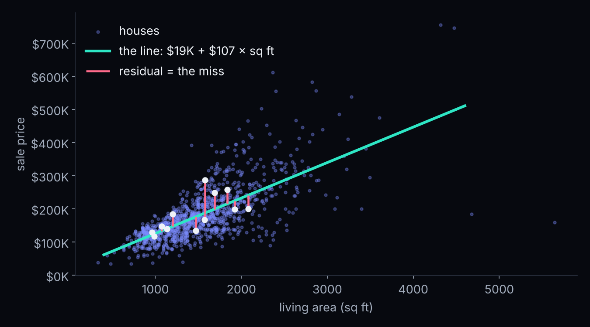
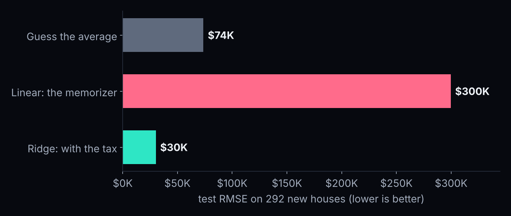
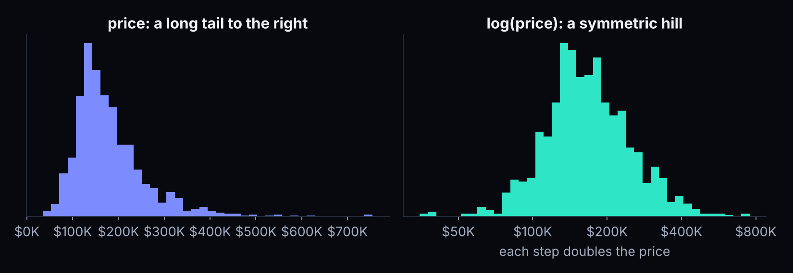
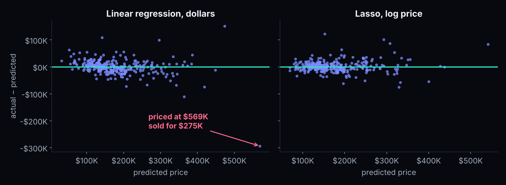
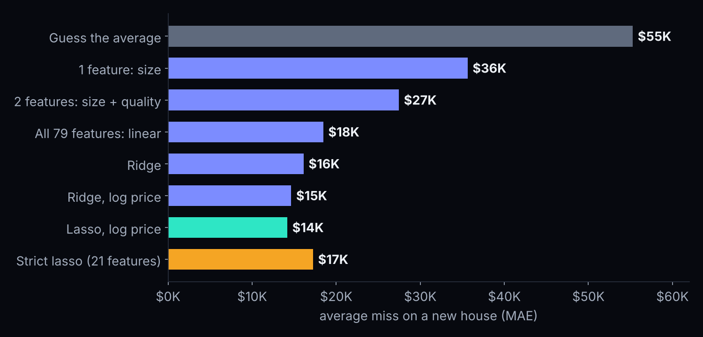

Station 1 · Beat the line: two sliders, 1,168 real houses. Get within 2% of the best possible RMSE.
Watch the red lines: those are your misses. Turn on the squares: that's what least squares adds up.
One feature, one line
price ≈ $19K + $107 × square feet

Size alone: R² 0.54 · average miss $36K (from $55K)
Holding everything else fixed
Add quality, and a square foot gets cheaper
Size only
$107 / sq ft
Pays for the space and the better build that big houses tend to have.
Size + quality
$55 / sq ft
One more square foot, for two houses of the same quality.
⚠️ A coefficient is not a cause. It's a pattern in past sales, not a promise that an addition pays $55 a foot.
All 79 features · the Session 3 pipeline
A prep station, then the model
Average miss: $18K. But that's 255 knobs for 1,168 houses…
Overfitting
The student who memorized the answer key
Only 100 houses, about 150 knobs. Practice test: $0 error, perfect. The real exam:

The cure: regularization
A complexity tax on every coefficient
Big coefficients pay a tax. A coefficient only grows if it earns its keep across many houses.
The tax rate is called alpha. Tiny alpha = plain linear regression. Huge alpha = everything squashed to zero.
RidgeCV and LassoCV try many alphas and pick one by cross-validation, on the training data only.
Two kinds of tax
Ridge shrinks. Lasso selects.
Ridge
Turns every knob down a little
All features stay in, none can shout.
Lasso
Turns useless knobs off
Coefficients hit exactly zero: feature selection for free.
Elastic net does a bit of both.
The log trick
Think in percentages, not dollars

A $20K miss is 20% on a $100K house, only 4% on a $500K one. Train on np.log(price) · turn back with np.exp(…) before grading.
Lasso's alpha is a dial
How simple can the model get?
alpha (the tax)
columns kept
test RMSE
chosen by CV
116
$21.3K
0.005
34
$24.5K
0.01
21
$25.2K
0.05
10
$32.4K
21 features, about $4K less accurate. A model you can explain on one page. (We peek at the test set only to show the trade-off. In real work, cross-validation picks alpha.)
Read the model
A realtor's checklist
Quality +1.4 points
+13.5%
+530 sq ft
+10%
30 years newer
+7.4%
+0.8 garage spaces
+5.7%
Two houses alike in every other way. The most explainable strong model you will ever ship.
Residual plots
Every miss, on one picture

Random cloud = healthy · fan = try log · curve = missing pattern · far dot = look at that house
Why did it miss by $300K?
The house had a 738 sq ft pool
Only 5 of 1,168 training houses have a pool, all smaller than this one.
with the pool
if it had no pool
linear regression
$569K
$187K
lasso
$152K
$191K
Actual price: $275K. A feature almost no house has gets a wild coefficient: overfitting, hiding in one column.
The biggest misses
When one house fools every model, look at the house
A pool bigger than any the model had seen: a price far outside its experience.
3 of lasso's 5 worst misses are new homes sold before they were finished. Only ~100 in our data: a segment the model doesn't know.
The expensive end is where the model is least sure, and where a mistake costs the most.
A price without an error bar is a bet.
Tonight's leaderboard · average miss (MAE)
From a $55K miss to a $14K miss

The metric menu
Same model, different audiences
MAE
Average miss, in $
Sales, operations, a home seller: "on average we're off by $14K."
RMSE
Big misses count extra
Risk and finance: one $150K overpayment hurts more than ten $15K ones.
MAPE
Average miss, in %
Executives. ⚠️ Breaks when values can be near zero: $5 off on a $1 item = 500%.
R²
Share explained
Analysts comparing models on the same data.
Your turn · in the notebook
Four questions, Step 10
Location, location, location. Drop Neighborhood. How many dollars does the average miss change? Why so little?
Turn the dial. Lasso with alpha = 0.02 and 0.005. Which would you show a client?
Metric memo. Three sentences: a home seller, a mortgage lender, your data-science lead.
Challenge. Gradient boosting on the same pipeline. Does it beat lasso here?
Coming up
What's due
Mon Nov 2 · Competition team formed + one submission on Kaggle · Project Milestone 1 (your problem and dataset, one paragraph)
Mon Nov 9, 4:30 PM · Competition leaderboard closes
Mon Nov 16, 11:59 PM · HW3: Part 1 thresholds (Session 5) + Part 2 Ames regression (tonight)
Three things to remember
Tonight in three lines
A coefficient is a slope in business units, holding everything else fixed. Not a cause.
Ridge shrinks, lasso selects. A complexity tax stops memorizing; CV picks the rate.
Always look at the residuals. They show where the model is wrong, and where it will cost you.
Before next Monday: price a house in Station 4 of the House Price Explorer. Next Monday: decision trees and random forests.